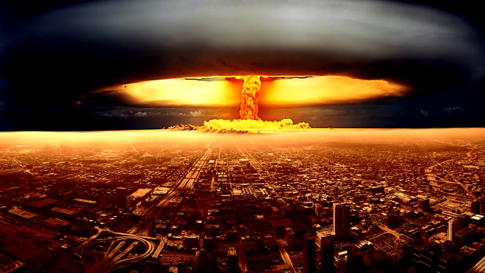

Os Protagonistas do Apocalipse Nuclear
“Pela primeira vez desde a crise dos mísseis cubanos, temos uma ameaça direta do uso (de uma)
arma nuclear se de fato as coisas continuarem no caminho que estão indo”, alertou Biden durante
comentários em um evento de arrecadação de fundos democrata em Nova York, onde foi apresentado
por James Murdoch, o filho mais novo do magnata da mídia Rupert Murdoch.
Ler mais

O Poder Destruidor das Bombas Nucleares
Bombas atômicas são dispositivos cujo poder de destruição deriva da fissão de núcleos de átomos
como o urânio-235 ou o plutônio-239. A detonação desse tipo de explosivo causa uma grande
destruição devido ao intenso calor, deslocamento de ar e radioatividade, além dos efeitos a
longo prazo à saúde e ao meio ambiente.
Ler mais
O que acontece depois de uma guerra nuclear?
Uma guerra nuclear moderna pode matar até 5 bilhões de pessoas devido ao impacto da fome global
desencadeada pela fuligem que bloquearia a luz solar, afetando plantações. Essas baixas seriam
maiores que as causadas pela explosão, estimam cientistas da universidade de Rutgers, nos
Estados Unidos.
Ler mais